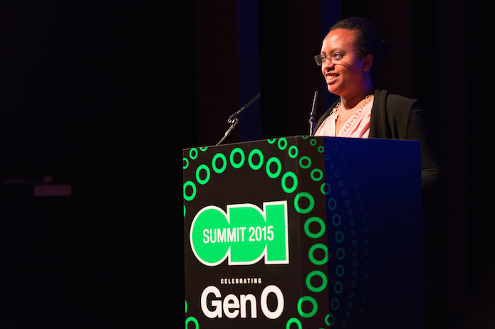

Summer call for entries
The ODI launches new call for ODI Showcase commissioned projects demonstrating the real-world impact of data innovation
Last year the ODI commissioned four diverse projects demonstrating how open data can be used to directly benefit individuals, organisations and society as part of its ODI Showcase series.
Following our spring call for entries earlier this year – for which we commissioned two winning projects, Out for the Count and Peta Jakarta – we are pleased to announce our summer call for entries, awarding four projects with £7,000 grant funding.
 Yodit Stanton of ODI Showcase 2015 winners Open Sensors speaks to delegates about her project at the ODI Summit 2015
How the ODI can support your project
Do you want to tell the story of your innovation success? Are you working on a project that needs development to demonstrate real change? Perhaps you would like to carry out analysis to reveal the impact your work has made so far?
The ODI’s mission is to connect, equip and inspire people around the world to innovate with data. We are awarding four projects with £7,000 grant funding, to help deliver and tell the stories of innovative uses of data that demonstrate longstanding value to others. We are particularly interested in projects using or producing open data within the finance, agriculture and nutrition, global development, open cities, transport and environmental sectors.
In addition to funding, we will provide support to help maximise the impact of your project with:
- remote expert ODI mentoring on conducting research and communicating your story to help you develop your project for maximum impact
- a platform to tell your story through the ODI network and mainstream media channels
- the opportunity to promote your work at ODI events, including at an ODI Friday lunchtime lecture
We’re looking for successful projects that
- are both large and small, from any region worldwide
- are from one of the following sectors: finance, agriculture & nutrition, global development, open cities, transport and environment, however strong applications outside of these sectors will be considered
- clearly evaluate the direct benefit of the project for individuals, local communities, governments, or businesses
- have life beyond the ODI Showcase with a vision to maintain and develop it further
- publish their outputs under an open licence (eg open source code, open data resulting from your analysis); if you are publishing open data we will expect you to create an Open Data Certificate for that data
- can be feasibly completed with their impacts communicated with the ODI for public promotion within five months of their commission date in July 2016
Using storytelling to maximise the impact of your work
An essential consideration for successful applications is the ability to tell a story that has clear findings to report on and resonates with the public.
Who will be interested in your story? Business leaders, citizens, government? What findings would you like to uncover, and can analysis or research back this up? Will you publish any data as a result? Can you produce a visualisation, video, tool, or even a game?
How you can apply
Stage 1: initial application – submit your project idea using the online form by midnight (GMT), Tuesday, 5 July 2016.
Stage 2: shortlist proposal – shortlisted applicants will be required to submit a proposal by midnight (GMT) Sunday, 10 July.
Stage 3: final interview – finalists will be interviewed between Monday, 18 July and Wednesday, 20 July. Interviews can be carried out remotely or in person at our London office.
We are looking for applicants that are:
- likely to deliver real-world impact
- likely to generate an engaging story
- innovative with data
- feasible with the time and budget available
- repeatable elsewhere (in other regions or contexts)
- concise and clear
Further information
Successful applicants will be awarded 25% of the funding upfront. A further 25% will be paid during the project, and the remaining 50% will be paid on satisfactory completion. We will endeavour to give feedback to unsuccessful applicants.
We will be releasing some information about applications to the ODI Showcase as open data. This will include information about your project such as title, sector, and what stage you are at. We won’t publish your name and contact details publicly and you will have the opportunity to opt out before submitting your application.
If we think your project has great potential but does not fit our requirements for the showcase, we would like to use our network to help you progress it. If you give permission, we will try to connect you with other members of the ODI network who might be interested in your project.
Please read our terms and conditions before applying.